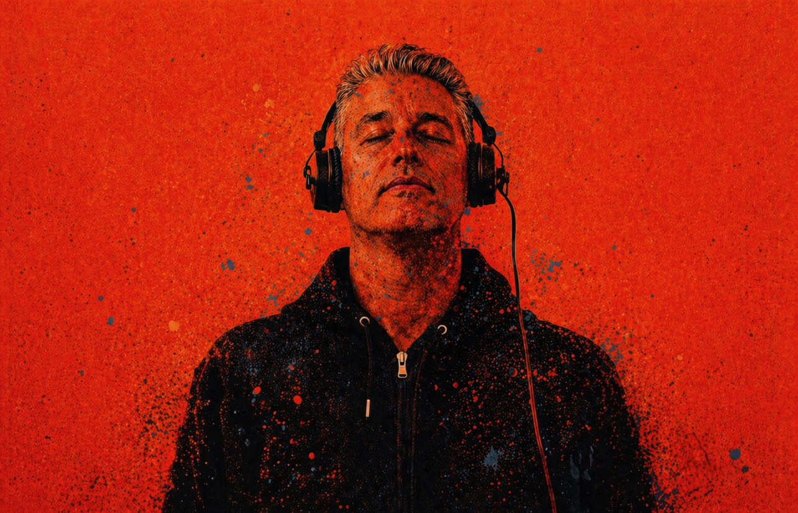
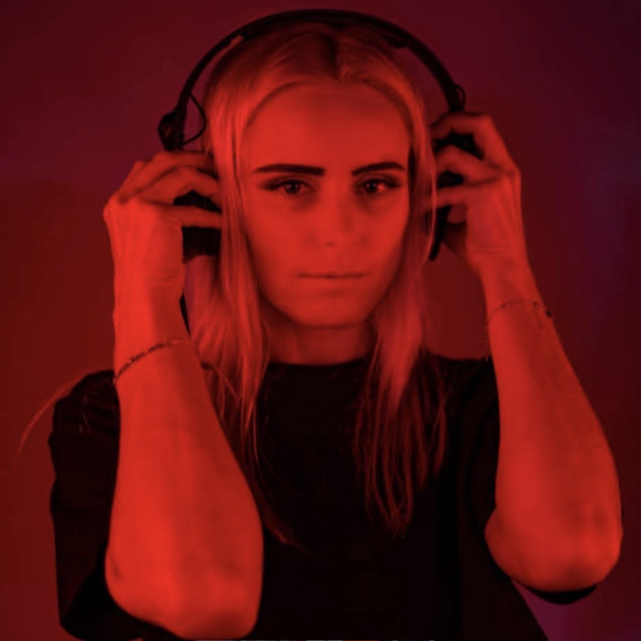
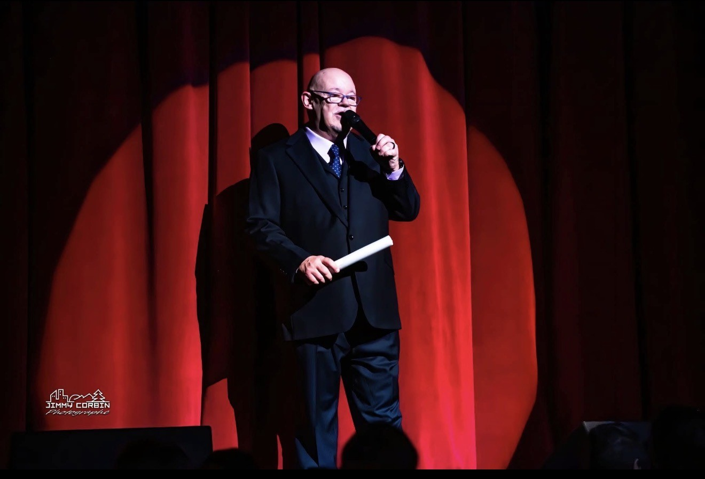

Le Hit Drive (live)
Deux heures non-stop de hits dance et house pour rentrer du boulot — la signature de l’après-midi.
Ambiance lounge, house et hits dance — programmation 2026 avec les matins d’Alain, Hit List, hommage Limelight Montréal, nuits internationales BRW et bien plus. Clique sur lecture pour rejoindre le flux live.
À la une
Deux heures non-stop de hits dance et house pour rentrer du boulot — la signature de l’après-midi.

Mixes club et soirées signés JÜMPOFFproject — énergie dance et transitions léchées.

Sélection house & dance orientée Europe — ambiance club international.
Formats
La colonne musicale du jour, le Hit Drive live et les transitions entre hits dance et club.
Hommage au Legendaire Limelight avec DJ Pierre Jutras — plusieurs créneaux dans la semaine.
Les nuits Best DJ’s live internationaux — même esprit que la grille 22h–07h en semaine.
Top 40, auditions animateurs, Franco chaud, Hot Slow et mixes européens.
Voix & mixes

Alain Perron
Les matins d’Alain (live) Lun–Ven · 07h00–09h00DJ Pierre Jutras
Hommage au Limelight Montréal Créneaux mer., ven., sam., dim.DJ JÜMPOFF
JÜMPOFFproject — mix club & soirées Mer., jeu., ven., sam., dim.DJ OKSANA
Show mix européen Jeu. 21h · Sam. 21hGrille 2026
Horaires indicatifs · Les blocs « nuits » se poursuivent jusqu’à 07h00. Le dimanche après minuit, la case suivante enchaîne avec la nuit BRW.
Studio
Alain Perron — studio et antenne. Immense merci à vous d’écouter Hit Radio.
Partenaires